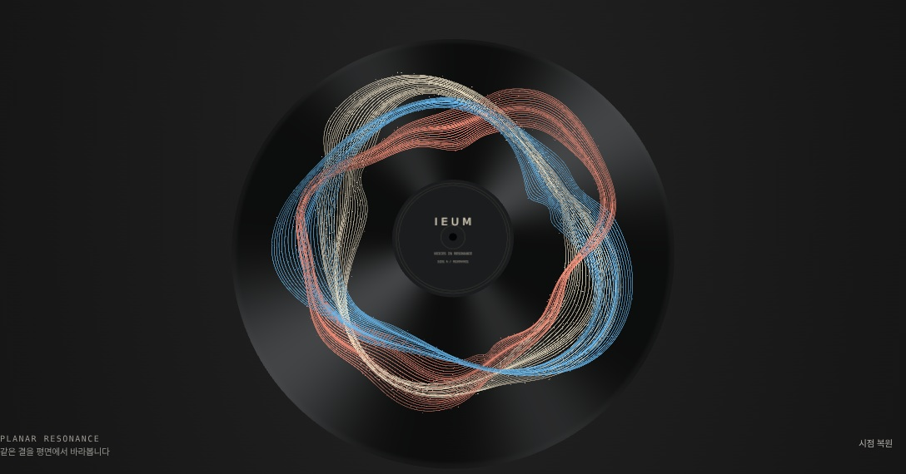

기준과 현재 구현


개인의 세 가지 서로 다른 매듭, 높이 차이, 닫힌 레코드 흐름과 교차를 구현했습니다. 기준 이미지의 불규칙한 미세 접힘과 풍부한 산포에 비해 현재 구현의 선 결은 더 정돈되어 있습니다. 픽셀 단위 일치나 최종 시각 승인 완료를 주장하지 않습니다.
승인 시안과 실행 결과를 구분합니다. 승인 시안만 생성 이미지이며, 나머지는 코드의 브라우저 렌더와 실제 캔버스 녹화입니다. 데모 프로필·오디오는 합성 데이터입니다.
독립 실행본 열기 ↗개인의 세 가지 서로 다른 매듭, 높이 차이, 닫힌 레코드 흐름과 교차를 구현했습니다. 기준 이미지의 불규칙한 미세 접힘과 풍부한 산포에 비해 현재 구현의 선 결은 더 정돈되어 있습니다. 픽셀 단위 일치나 최종 시각 승인 완료를 주장하지 않습니다.

앱에서 사용하는 동일한 SVG 생성 함수를 실제 브라우저에 렌더했습니다. 색상 외에도 A의 넓은 고리, B의 촘촘한 교차, C의 높은 고리, D의 비대칭 접힘이 다릅니다.



실제 WebGL 캔버스와 Web Audio 출력 녹화. 대기 → 합성 데모 신호 재생 → 일시정지 순서입니다. 정지 이미지를 보간한 영상이 아닙니다. 정확한 전환 시점은 motion-verification.json에 있습니다.


검증 환경: Linux headless Chromium / SwiftShader. 기능 검사와 시각 판단은 별도로 기록합니다. 상세 결과는 PROGRESS.md와 *verification.json을 확인하세요.